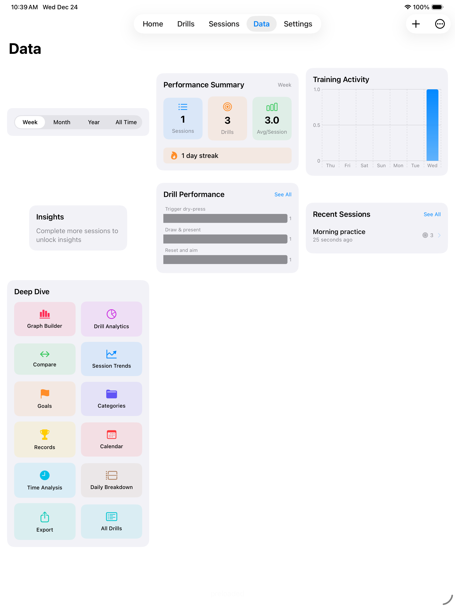

iPad — Analysis Cockpit
Use iPad for planning and coaching: big charts, side‑by‑side comparisons, and quick editing make review fast and clear.

What you get
- Full dashboard: Big charts and filters reveal trends at a glance.
- Edit sessions easily: Touch or keyboard tools to refine runs and notes.
- Compare side‑by‑side: Ideal for coach/athlete review and spotting outliers.
- Drill authoring: Build and adjust templates quickly for practice plans.
- Range‑side coaching: Use iPad as a coaching station or display for groups.